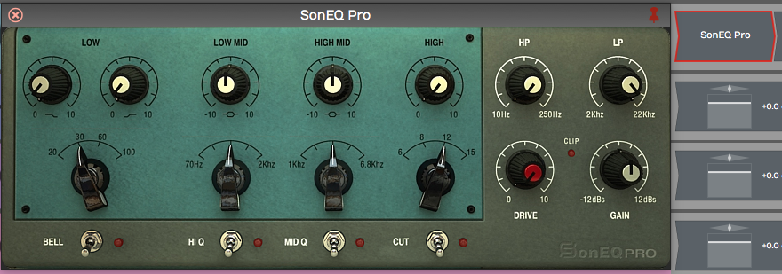

Using Plugins¶
Effects plugins go on a track's plugin chain, which you can work with in the inline mixer or in the separate Mixer.
📝 Note: You scan for plugins and set up a favourites plugin list in Settings > Plugins. See Reference: Settings > Plugins.
The Inline Mixer¶
The inline mixer sits along the right side of the Edit and completes the left-to-right signal flow on each track. Open and close it with the open/close icon at the upper right, or press V.

Button to Open or Close the Inline Mixer (V)
Every new track has a Volume & Pan plugin and a Level Meter plugin inserted. These behave like any other plugin: you can change their order, remove them, or add more instances of them to the same track.

Default Plugins Volume & Pan and Level Meter
For example, you might want a level meter before and after a compressor. You can add any other plugins, built-in or third-party, to the inline mixer.

Level Meter Before and After the Built-in Compressor
💡 Tip: Each inline mixer channel is stereo. Even if the track contains mono clips, you'll usually want stereo versions of plugins in the inline mixer, because mono plugins only affect the left side of the signal.
Adjusting the Size of the Inline Mixer¶
Move the mouse pointer slowly from the arrangement to the inline mixer. As it crosses over, a vertical highlight line appears.

Resizing the Inline Mixer
Drag the highlight line left to expand the inline mixer, or right to make it smaller. The plugins in the inline mixer resize to fit.
💡 Tip: If you accidentally delete, change or move a plugin, or change your mind, choose Edit > Undo from the main menu (Cmd + Z / Ctrl + Z) to restore it.
Working with Plugins¶
You can customise the inline mixer for each track by inserting a chain of plugins, so there's no need to switch between a horizontal track view and a vertical console view.
Inserting Plugins¶
To insert a Waveform or third-party plugin, drag the Plugin Object to a track and select the plugin you want from the list.

Drag the Plugin Object to Insert a Plugin
A third-party plugin's window opens when you insert it. Apart from the core built-in plugins, each plugin has its own graphical interface.
Right-Click to Insert¶
Right-click any existing plugin and select Add new plugin. The plugin selector menu opens; pick a plugin, and it's added to the left of the one you right-clicked.
📝 Note: If you don't see some of your plugins, see Scanning for Plugins to scan your system for all available plugins.
Plugin Settings¶
Click a plugin to select it. The Actions panel then shows the settings and actions for that plugin, and the click also opens the plugin's window.
The same pages are also available in the Plugins tab of the Detail Editor, which lays the whole track's chain out side by side so you can have several plugins' pages open at once. See The Plugins Detail Editor.

Select a Plugin to See its Settings
Duplicating Plugins¶
To duplicate a plugin, select it and press D. This gives you a new instance of the plugin to drag to a different position or to another track.

Duplicate Plugins by Pressing D
Deleting Plugins¶
To delete a plugin, select it and press Delete or Backspace, or use Delete this plugin in the Actions panel.
Moving Plugins¶
To move a plugin, drag it to where you want it, on the same track or a different one. As you drag, the gap where the plugin will go lights up in the highlight colour.

Moving a Plugin
Copying Plugins¶
To copy a plugin, hold down Opt / Alt and drag it to where you want the copy. Alternatively, press D to duplicate it, then drag the duplicate to the target location.
Bypassing a Plugin¶
To bypass a plugin, select it and turn off Enabled in the Actions panel, or press F. A bypassed plugin is shown darkened in the inline mixer.

A Bypassed Plugin
💡 Tip: To bypass several plugins at once, select them and press F.
Plugin Presets¶
Most plugins have a Preset row with three buttons in their Actions panel. Presets you save go into Waveform's preset library, so they are available to every instance of that plugin in any Edit.
Load (folder icon): Lists the saved presets for this plugin type;
pick one to apply it. For third-party plugins the menu also lists preset
files from the plugin's own preset folders, and has an item to load a
file directly: Load from an fxb/fxp file... (VST),
Load from an aupreset file... (AU) or Load from a vstpreset
file... (VST3). For racks the item is Import..., which reads a
.trkpreset or .trkrack file.
Save (disk icon): Pick one of your own presets to overwrite it with the current settings (you'll be asked to confirm, and it can't be undone), or choose Create new preset... to add a new one. VST plugins can also Save a bank file (fxb)... or Save a preset file (fxp)..., AU plugins can Save an aupreset file..., and racks can Export... a file to share.
Delete (bin icon): Pick a preset to remove it from the library. Built-in presets can't be deleted.
Assigning a Quick Control Parameter¶
You can give any instance of a plugin a quick control parameter. This lets you tweak one parameter without going to the Actions panel or opening the plugin's window. For example, the mix control of a delay plugin makes a handy quick control.

Delay Mix Set as a Quick Control Parameter
To set up a quick control parameter, right-click the plugin and choose Set quick control parameter, then choose which parameter to use.

Right-click to Set the Quick Control Parameter
Waveform Delay has only two parameters, but many third-party plugins have many more to choose from.
Third-Party Plugins¶
Third-party plugins are inserted in the same way as built-in plugins, but each has its own window, designed by its developer.

Sonimus SonEQ, an Example 3rd Party Plugin
To open a third-party plugin's window, click the plugin in the inline mixer.
📝 Note: To open plugin windows with a double-click instead, change Open plugin windows by under Plugin Windows on the Settings > General page. (Default: Single-clicking)

Setting to Open Plugins with a Single-click
Cmajor Patches¶
Waveform can host Cmajor patches: audio effects and instruments written in
the Cmajor language and distributed as .cmajorpatch bundles. Patches are
compiled on the fly when they load, so they run as native plugins inside your
Edit and insert exactly like any other plugin.
To use them, first tell Waveform where to find your patches: open Settings > File Locations and add a folder under Directories to search for Cmajor patches. Scan for plugins, and the patches appear in the plugin selector under the Cmajor format. If a patch contains an error, the message is shown on the plugin slot so you can fix it. A built-in Pro54 example synth is installed automatically the first time you run Waveform.
Patches saved in the cmajor-patches folder inside your Project folder,
such as the ones the AI Assistant builds, don't need a scan. They appear in a
Project Cmajor Patches folder in the plugin selector, after Plugin
Racks, and under Plugins in the Browser's Search tab, where you can drag
one onto a track or double-click it to insert it. The folder only appears
when the Project has patches, and menus that add effects leave out instrument
patches. The Browser refreshes its list when the assistant creates or changes
a patch.
📝 Note: Cmajor support is available on Apple Silicon macOS and Windows. It is not available on Linux or on Intel-only Macs. There is no edition restriction for hosting patches. Having the AI Assistant build patches for you PRO needs Waveform Pro; see Building Cmajor plugins.
Searching for Plugins¶
Use the Search tab of the Browser to find a plugin, then drag it to your Edit:
- Open the Browser and click the Search tab.
- Type the first few characters of the plugin's name.
- From the search results, drag the plugin from the Browser to the inline mixer.

Searching for Plugins in the Search Tab of the Browser
The search uses an index that includes plugin names, tags, and manufacturer. To set tags, see Tagging Plugins.
💡 Tip: When you're searching for a specific plugin, select Plugins under Categories in the category list for more targeted results.

Limiting the Search to Plugins
Using Master Plugins¶
To apply processing to the full stereo mix, add plugins to the Master track or to the master plugin box in the transport bar. When the box is empty it shows a plug icon; drag plugins into it to add them to the master output plugin chain. It holds up to four plugins.
The Master track shows the same master plugin chain as a track in the arrangement. To show it, click the eye button at the upper right and choose Master, or choose View > Global tracks > Show or hide Master track. Plugins you add there and in the transport box are the same plugins.

Master plugins area
A typical master chain is a bus compressor, a limiter and perhaps an EQ. Waveform's own Master Mix plugin (Waveform Pro and OEM) combines those functions in one plugin designed for use on a full mix.

Master Mix inserted on the master
💡 Tip: Click an empty part of the master plugin box and choose Add new plugin to open the plugin selector menu. This can be quicker than dragging the plugin object down there.

Add new plugin from the master plugin box
Plugin Sidechains¶
Plugins that support a sidechain input have a sidechain assignment list at the upper left in the plugin header. Pick which track you want to route to the sidechain.

Selecting a Sidechain Input
In this example, the Drums track is being routed to the sidechain input of a Compressor on the Bass track, a common trick to make the bass duck under the kick. Not every plugin has a sidechain input: the built-in Gate, for example, has no sidechain list.